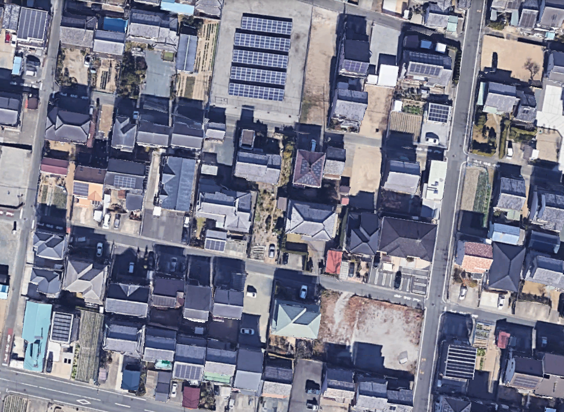
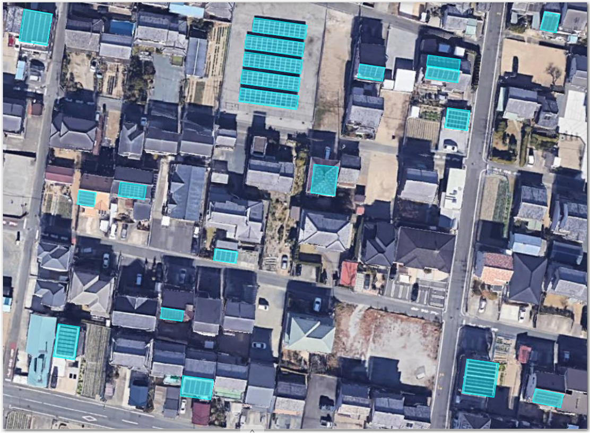

Powered by trained human teams, structured QA, and documented workflows at every stage of delivery.
We help organizations generate structured, usable geospatial intelligence from fragmented data sources.


Structured geospatial data creation through human-led validation workflows and rigorous QA systems.
From GeoAI model validation to spatial analysis and change detection — the complete intelligence workflow.
We operate as a structured delivery partner — not a freelance marketplace or a black-box automation tool. Every engagement is built on trained teams, documented standards, and accountable QA.
Dedicated annotators trained to your domain, continuous across phases.
Quality control embedded at annotation, batch, and delivery stages.
Real expert judgment applied to complex spatial interpretation problems.
Documented SOPs, decision logic, and acceptance criteria — in writing.
Consistent, traceable outputs designed to hold up at production scale.
Specialized in geospatial interpretation — not a generic labeling service.
We map your operational goals to a clear data and intelligence specification before any work begins.
We build the annotation guidelines, QA systems, and validation logic specific to your use case.
A scoped pilot validates the workflow against your quality standards before full-scale deployment.
Reliable, continuous delivery at scale — with embedded QA and iterative workflow improvement.
From early-stage startups to enterprise research teams, we serve organizations that value accurate, structured geospatial data.
Training data & GeoAI workflows
Ground truth & spatial datasets
Annotation & intelligence workflows
Monitoring & change detection
Production-grade validated datasets